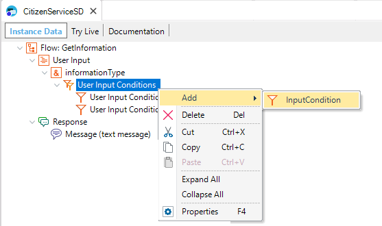
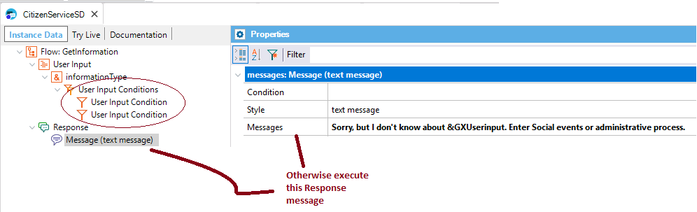

Deprecated: Since GeneXus 16 upgrade 5.
These are conditions stated for the User Input of the Flow of a Conversational instance. To add a User Input condition, right-click on a User input and select Add - > InputCondition from the menu.  The conditions are executed when the user enters data for the User input parameter. If none of the User Input conditions evaluates to TRUE, you can send feedback to the user through the Message of the Flow.  The conditions can be expressed using the reference to a context variable or the reference to an entity (using the @entity syntax). Sample1. Redirecting one Flow to another To redirect the flow, depending on a condition, the Action property must be set to Redirect. See Howto: Redirecting one flow to another using Input conditions 2. Setting the User Input as not required If the Action property is set to "Is Required," the User Input will be required only if the condition evaluates to TRUE. Otherwise, the User input is always required. See also
|